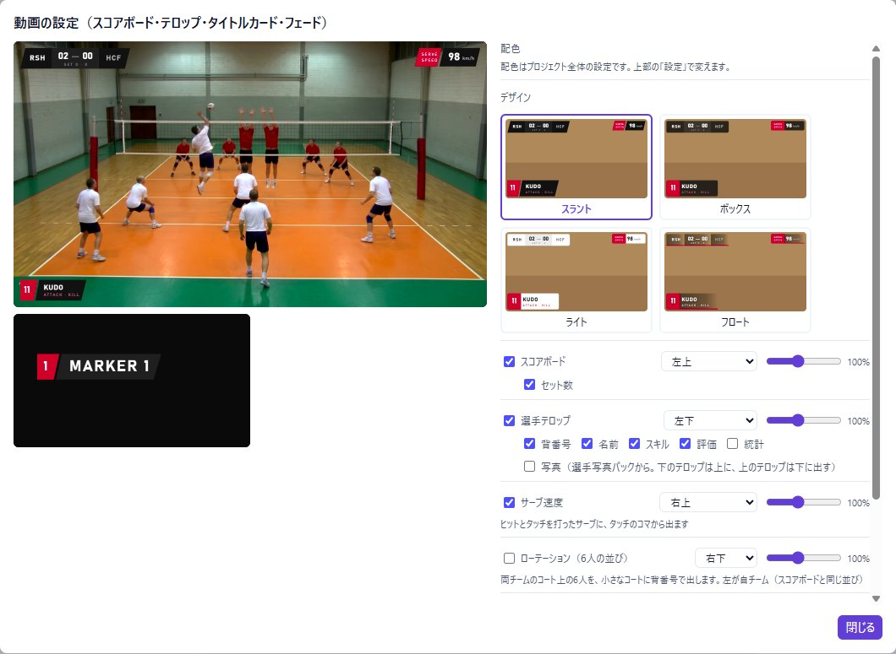

10. 書き出しの詳細
MP4 の見た目を決める「動画の設定」と、書き出せる範囲、スライドやレポートの書き出し方です。書き出しにはログイン（お試し中か契約中）が必要です。
動画の設定
右上の動画の名前の横にある ⚙ か、書き出しタブの動画の設定で開きます。動画ごとの設定で、左に見本が出ます。

| 項目 | 中身 |
|---|---|
| デザイン | スラント・ボックス・ライト・フロートの 4 つです。色はプロジェクトの設定で決めます。 |
| スコアボード | 出すかどうか、位置、大きさ、セット数を出すかどうかです。 |
| 選手テロップ | 位置、大きさと、背番号・名前・スキル・評価・統計・写真のどれを出すかです。 |
| サーブ速度・ローテーション | 位置と大きさです（7 章）。 |
| タイトルカード | 動画の頭・シーンの頭・マーカーの頭に出すかどうかと、秒数です。 |
| フェード | クリップとカードの切り替わりをフェードにするかどうかと、その秒数です。 |
書き出す範囲
右の書き出しタブで選びます（5 章）。
- すべて書き出し：動画全体を 1 本の MP4 にします。
- シーンごとに書き出し：シーンごとに、シーンの名前のファイルにします。保存先のフォルダを選ぶと順に書き出します。
- シーンだけ・マーカーだけ：1 つのシーンか、1 つのマーカーだけを書き出します。
- このクリップだけ：シーンのクリップを右クリックしてこのクリップだけ書き出す…を選びます。タイトルカードは入りません。
同じ名前のファイルがあるときは、上書きしてよいか聞きます。書き出しの途中でキャンセルもできます。
画質
ふだんは 720p で書き出します。書き出す動画に使っている試合の動画がすべて 1080p 以上のときだけ、書き出しタブに画質の 720p・1080p の切り替えが出ます。元の動画が 720p なら、1080p にしてもきれいにはならないためです。1080p はファイルが大きくなり、書き出しにも時間がかかります。
YouTube のチャプター
YouTube のチャプターも書き出すにすると、シーンの始まりの時刻を並べたテキストファイル（.txt）が MP4 の横にできます。YouTube の説明欄に貼るとチャプターになります。YouTube は、チャプターが 3 つ以上あり、それぞれ 10 秒以上のときだけチャプターを出します。
スライドとカードの書き出し
スライドかタイトルカードを開くと、書き出しのボタンが出ます。
- PNG に書き出す…：開いているスライドを画像にします。
- PDF に書き出す…：そのシーンのカードとスライドを、順に 1 つの PDF にします。
- PowerPoint に書き出す…：そのシーンのスライドから選んで、1 つの PowerPoint ファイルにします。図形を PowerPoint で動かせる形のまま入れることもできます。
マッチレポートは、レポートの画面から PDF で保存します（8 章）。